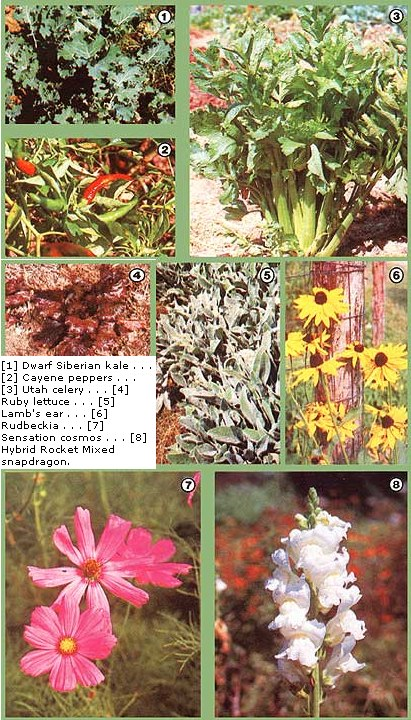

'Tis the time to forage through seed catalogs and choose next season's vegetable and flower varieties. That's why we thought you'd
enjoy seeing . . .
Now every gardener who's ever nurtured a vegetable from seed to supper table has his or her particularly preferred variety of the crop . . . and each one of us who's raised flowers has some special tried-and-true standbys that get grown anew every year. It's no wonder, then, that one of the great pleasures of gardening is telling others about those "pet" cultivars.
And that's just what we're going to do right now: tell you which flowers and vegetables Kerry and Barbara Sullivan, the couple who tended our gorgeous Eco-Village gardens the past four years, have learned to cherish most. Mind you, while the following list inevitably displays a good bit of personal bias, it also contains the distillation of a great deal of experience. The Sullivans have frequently grown as many as eight varieties of a single crop in one year, carefully monitoring each type's performance and selecting only the best cultivars for the following year's garden. Any plant, then, that's made it to their lineup of favorites has earned the privilege . . . and may well merit a trial planting in your own backyard or homestead plot.
Naturally, though, Barb and Kerry have been most interested in choosing cultivars that do best in one specific site: the mountainous, 4,400-degree-day climate (Zone 7) of our Ecological Research Center in western North Carolina. So the fact that Ithaca MI lettuce or Fiesta Gitana calendula have done well in our environs doesn't necessarily mean they'll thrive in your locale.
But you'll never know that for certain unless you pick some of the crops that sound most appealing to you and try them out, will you? Fortunately, such horticultural experimentation is another of the great joys of gardening. So shop around for some new ideas in the following charts. (Almost all of the plants mentioned are available from several of the companies listed on pages 61 and 95. Where only one or two houses carry a particular variety, its source or sources may be found in the "Comments" section of the chart.) Then send off for a few seed catalogs, order your plant starters, and get ready to make 1984 your best growing year yet!
|
 |
|
|